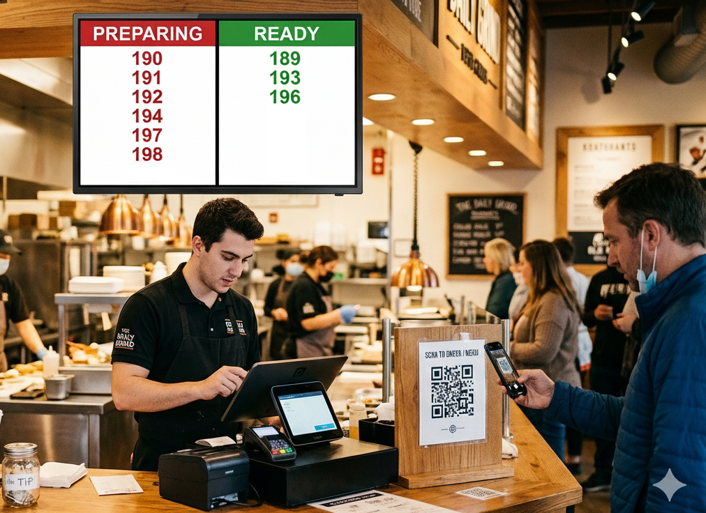

A modern restaurant workflow platform designed to improve customer experience, reduce operational stress, and give owners real visibility into daily operations.

Dedicated interfaces supporting staff coordination, supervision, and real-time service flow.
Customers can easily monitor order readiness without waiting near pickup areas.
Restaurant owners gain immediate insight into operational activity and service performance.
Designed to function consistently within restaurant environments for uninterrupted service.
Suitable for single restaurants or multi-branch operations.
System maintenance and updates managed to ensure long-term stability.
Full system details and workflow demonstrations are provided through personal presentation.